Carga en terreno · Centro Termal de Copahue

Identificación operativa de la encuesta.
Procedencia, recurrencia y composición del grupo.
Alojamiento, permanencia e intensidad termal.
Puede seleccionar más de una opción.
Valore únicamente los servicios utilizados.
Valoración general de Copahue.
Controle la información antes de guardar.